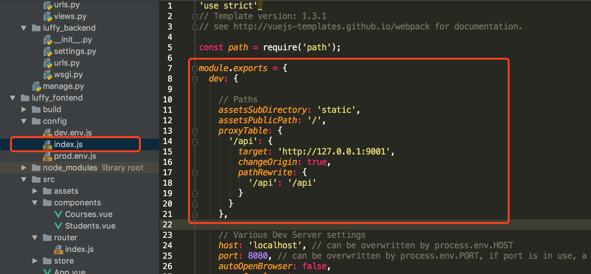

原文出处:本文由博客园博主与鹿逐秋提供。
原文连接:https://www.cnblogs.com/wangyueping/p/11458080.html
原文连接:https://www.cnblogs.com/wangyueping/p/11458080.html
JQuery时代，我们使用ajax向后台提交数据请求，Vue时代，Axios提供了前端对后台数据请求的各种方式。
一、什么是Axios
Axios是基于Promise的Http客户端，可以在浏览器和node.js中使用。
二、为什么使用Axios
Axios非常适合前后端数据交互，另一种请求后端数据的方式是vue-resource，vue-resource已经不再更新了，且只支持浏览器端使用，而Axios同时支持浏览器和Node端使用。
Vue开发者推荐使用更好的第三方工具，这就是Axios
三、安装
Axios的安装支持多种方式
npm安装
npm install axioscdn
<script src="https://cdn.bootcss.com/axios/0.18.0/axios.min.js"></script>四、使用方式介绍
接下来，我们使用Django，搭建一个后台程序，并使用Vue Cli搭建一个前端程序，使用Axios进行前后端数据交互。
使用Vue Cli创建一个前端程序
vue init webpack luffy_fontend使用Django创建一个后端程序luffy_backend
`django-admin startproject luffy_backend`创建一个courses应用
cd luffy_backend
python manage.py startapp courses在models.py中创建两个类
from django.db import models
# Create your models here.
class Courses(models.Model):
course_name = models.CharField(max_length=32)
course_price = models.IntegerField()
course_teacher = models.CharField(max_length=16)
start_date = models.DateField(auto_now=True, null=False)
end_date = models.DateField(auto_now=True, null=False)
def __str__(self):
return self.course_name
class Students(models.Model):
student_name = models.CharField(max_length=16)
student_id = models.IntegerField()
student_phone = models.IntegerField()
student_address = models.CharField(max_length=128)插入数据
// courses_courses
insert into courses_courses(course_name, course_price, course_teacher, start_date, end_date) values('Python全栈中级开发', 12800, 'Pizza', '2018-10-01', '2018-10-02');
insert into courses_courses(course_name, course_price, course_teacher, start_date, end_date) values('Python全栈高级开发', 19800, 'Alex', '2018-10-03', '2018-10-04');
insert into courses_courses(course_name, course_price, course_teacher, start_date, end_date) values('Linux高级运维', 12800, 'Oldboy', '2018-10-05', '2018-10-06');
insert into courses_courses(course_name, course_price, course_teacher, start_date, end_date) values('高级网络工程师', 12800, 'Egon', '2018-10-07', '2018-10-08');
insert into courses_courses(course_name, course_price, course_teacher, start_date, end_date) values('Go全栈高级开发', 12800, 'Yuan', '2018-10-09', '2018-10-10');
insert into courses_courses(course_name, course_price, course_teacher, start_date, end_date) values('Vue高级开发', 12800, 'Xiaoma', '2018-10-11', '2018-10-12');
// courses_students
insert into courses_students(id, student_name, student_id, student_phone, student_address) values(1, 'Alex', 100001, 1378061875, '北京市大兴区智障一中');
insert into courses_students(id, student_name, student_id, student_phone, student_address) values(2, 'Pizza', 100002, 1378161875, '北京市朝阳区第一中学');
insert into courses_students(id, student_name, student_id, student_phone, student_address) values(2, 'Egon', 100003, 1378261875, '北京市房山智障三中');
insert into courses_students(id, student_name, student_id, student_phone, student_address) values(4, 'Oldboy', 100004, 1378361875, '北京市大兴区智障三中');
insert into courses_students(id, student_name, student_id, student_phone, student_address) values(5, 'Yuanhao', 100005, 1378460275, '北京市丰台区智障四中');
insert into courses_students(id, student_name, student_id, student_phone, student_address) values(6, 'Jinxin', 100006, 1378560875, '北京市海淀区智障五中');在views.py中写好接口
from django.shortcuts import render, HttpResponse
from rest_framework.views import APIView
import json
from luffy_backend import settings
from .models import Courses
from .models import Students
# Create your views here.
class CoursesView(APIView):
def get(self, request):
print("Courses Get Methods Exec!")
courses = list()
for item in Courses.objects.all():
course = {
"course_name": item.course_name,
"course_price": item.course_price,
'course_teacher': item.course_teacher,
'start_date': str(item.start_date),
'end_date': str(item.end_date)
}
courses.append(course)
print(courses)
return HttpResponse(json.dumps(courses, ensure_ascii=False))
class StudentsView(APIView):
def get(self, request):
print("Student Get Methods Exec!")
students = list()
for item in Students.objects.all():
student = {
'student_name': item.student_name,
'student_id': item.student_id,
'student_phone': item.student_phone,
'student_address': item.student_address
}
students.append(student)
return HttpResponse(json.dumps(students, ensure_ascii=False))
def post(self, request):
print("Student Post Methods Exec!")
print(request.body.decode('utf-8'))
response = json.dumps(request.POST)
return HttpResponse(response)定义接口

配置后台接口
注意，修改配置文件后，需要重启前端服务器。

在Vue Cli中使用axios
// The Vue build version to load with the `import` command
// (runtime-only or standalone) has been set in webpack.base.conf with an alias.
import Vue from 'vue'
import App from './App'
import router from './router'
import store from './store'
import axios from "axios"
Vue.prototype.$axios = axios;
Vue.config.productionTip = false;
new Vue({
el: '#app',
router,
template: '<App></App>',
components: {
App
},
store: store
});获取课程信息
<template>
<div>
<span>这是课程详情页面</span>
<button @click="getCourses">点击获取全部课程</button>
<div v-if="isShow">
<table border="1">
<thead>
<tr>
<th>课程名称</th>
<th>课程价格</th>
<th>授课老师</th>
<th>开课日期</th>
<th>结课日期</th>
</tr>
</thead>
<tbody>
<tr v-for="(course, index) in courses" :key="index">
<td>{{ course.course_name }}</td>
<td>{{ course.course_price }}</td>
<td>{{ course.course_teacher }}</td>
<td>{{ course.start_date }}</td>
<td>{{ course.end_date }}</td>
</tr>
</tbody>
</table>
</div>
</div>
</template>
<script>
export default {
name: "Courses",
data() {
return {
isShow: false,
courses: []
}
},
methods: {
getCourses: function () {
let ts = this;
this.$axios.get('/api/course/1/')
.then(function (response) {
ts.isShow = true;
ts.courses = response.data;
})
.catch(function (error) {
console.log(error);
});
}
}
}
</script>
<style scoped>
</style>获取学生信息
<template>
<div>
<span>这是学员信息页面</span>
<button @click="getStudents">点击获取学生信息</button>
<button @click="changeStudents">点击修改学生信息</button>
<div v-if="isShow">
<table border="1">
<thead>
<tr>
<th>学生ID</th>
<th>学生姓名</th>
<th>学生电话</th>
<th>学生地址</th>
</tr>
</thead>
<tbody>
<tr v-for="(student, index) in students" :key="index">
<td>{{ student.student_id }}</td>
<td><input v-model="student.student_name"/></td>
<td><input v-model="student.student_phone"/></td>
<td><input v-model="student.student_address"/></td>
</tr>
</tbody>
</table>
</div>
</div>
</template>
<script>
export default {
name: "Students",
data() {
return {
isShow: false,
students: []
}
},
methods: {
getStudents: function () {
let ts = this;
this.$axios.get('/api/student/1/')
.then(function (response) {
console.log(response);
ts.isShow = true;
ts.students = response.data;
})
.catch(function (error) {
console.log(error);
})
},
changeStudents: function () {
let ts = this;
this.$axios.post('/api/student/2/', {
student_name: 1,
student_id: 100001,
student_phone: 1347658765,
student_address: "北京市石景山区智障六中"
})
.then(function (response) {
})
.catch(function (error) {
console.log(error);
})
}
}
}
</script>
<style scoped>
</style>处理跨域问题
发送post请求时，需要解决跨域问题，我们采用在Django中自定义一个处理跨域问题的中间件来解决这个问题。
from django.utils.deprecation import MiddlewareMixin
class MyCore(MiddlewareMixin):
def process_response(self, request, response):
response["Access-Control-Allow-Origin"] = '*'
if request.method == 'OPTIONS':
response["Access-Control-Allow-Headers"] = 'Content-Type'
response["Access-Control-Allow-Methods"] = 'POST, DELETE, PUT'
return response以上，就是我们通过Axios的get和post请求与后台进行数据交互的全过程。